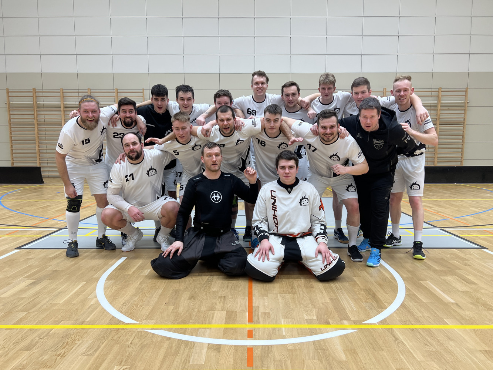

Zvěřejněno dne 21.2.2024

Muži před sebou poslední 3 kola měli těžký úkol. Museli alespoň 2x
vyhrát, aby udrželi své příslušenství v DIVIZI D pro následující rok.
Čekal je těžký soupěř Ždár nad Sázavou, který se drží v horní části
tabulky, poté Všestary, které byli o příčku výše a dále poslední zápas
s Havlíčkovým Brodem nabídl zajímovou bitvu s týmem o příčku níže.
Muži zrovna neměli za sebou úplně povedené období sezóny. Z posledních
12 možných bodů získali pouhé 2 body po vítězsví po prodloužení proti
Orlicku Třebovsku 10:9 a navíc zaznamenali krutou porážku s poslední
Třebíčí 3:2.
Do zápasu se Ždárem vstupovali tedy jako outsider. Po 50 minutách na
tabuli svítilo nerozhodné skóre, když vedli jak hosté tak i domácí.
Pak ale už úřadovali borci z Dobrušky a nenechali nic v náhodě, a
gólovou smrští přetlačili soupeře a Dobruška výhrala 8:5 a mohli si
připsat veledůležité body do tabulky.
Další týden se Dobruška
představila v nedalekých Předměřicích s týmem ze Všestar. V prvním
vzájemném zápase sezóny se podařilo Dobrušce doma vyhrát přesvědčive
8:3. Dobrušce před tímto zápasem stačilo pouze 2 body k zajištění
udržení. Po polovině zápasu to ale vypadalo prachbídně. 5:2 pro
Všestary vypadalo jako komfortní náskok, ale Dobrušce se do konce 2.
třetiny podařilo vyrovnat. Poté přišla heroická 3. třetina, kterou
Dobruška vyhrála 3:0 a v konečném součtu i zápas poměrem 6:5 a mohli
slavit jistotu udržení.
Před posledním zápase s Havlíčkovým
Brodem, když soupeři šlo o všechno a domácím pouze o teoretickou účast
v play-off. Dobruška nenechala nic v náhodě a vyhrála 6:3 po
dramatickém průběhu a zakončila sezónu 3 vítězstvími v řadě a play-off
jí uteklo pouze o jediný bod nebo případný rozdíl ve skóre.
Zvěřejněno dne 10.4.2024

Skvělá základní část napříc 1.Ligy žen skupiny Východ znamenala, že
Dobruška vstupovala do Play off z 1. pozice. Bilance 22 výher a skvělé
skóre pasovalo Dobrušské hráčky do role favorita. V osmifinále holky
narazily na Alligators Šitbořice, se kterými se 2x utkaly v základní
části poměrem 6:0 a 8:3 pro Dobrušku. Holky nenechaly nic v náhodě a
první zápas doma nadělily debakl 11:2 a následující den holky ukončili
sérii pohodlně 7:0.
Čtvrtfinále slibavalo zajímavou bitvu, když soupeřem byly pražské
Black Angles, jenž se po základní části ve skupině Západ umístil na 5.
pozici. První zápas doma znamenal první prohru pro Dobrušku v letošní
sezóně vůbec. Výsledek 4:5 po prodloužení znamenal, že Dobrušku dělilo
od konce sezóny pouze jediná porážka. Dalši den bylo na programu
utkání v Praze a holkám se podařilo uválčit výhru 3:2 a v týdnu se
hrál rozhodující zápas o postup do semifinále. Dobruška do zápasu
vlétla skvěle a po polovině zápasu drzila soupeře 7:0. Nicméně holky z
Black Angels nesložily svoje zbraně a zdramatizovaly utkání 6
brankami. Dobruška si to ale pohlídala a mohla tak slavit postup do
semifinále.
V semifinále je čekal těžký soupěř z dalekého Chomutova, který skončil
2. ve své skupině a play-off pruplul celkem bez problému. A tato série
měla totožný průběh jako minulá série. První zápas vyhrál Chomutov
4:3, druhý Dobruška 3:2 a rozhodující zápas vyhrála Dobruška 2:1. Tato
série měla skvělou navštěvovanost a tyto 3 zápasy vidělo přes 1500
diváků. Série nabídla férový souboj mezi kvalitními celky a na konci
se mohly radovat holky z Dobrušku z postupu do finále.
Ve finále se holky z Dobrušky utkaly proti dalšímu pražskému soupěři.
Start 98 Praha skončil po základní části také na prvním místě, ale
některé body poztrácel, takže výhodu domácího prostředí měla Dobruška.
První zápas po dramatickém průběhu vyhrála 3:2 po prodloužení a na
hřiště Pražského Startu prohrála 4:2 a stav byl vyrovnaný.